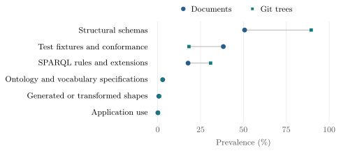
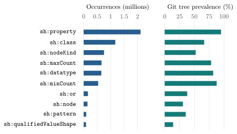

SHACL en Forme
SHACL Usage in the Wild
- Author:
- Erdem Önal
- Project:
- GitHub
- Permanent identifier:
- https://w3id.org/shacl-en-forme
- Dataset:
- Statistics (JSON-LD)
- Vocabulary:
- RDF Vocabulary (Turtle)
Section 1 covers dataset coverage, shape distribution, ontology alignment, constraint consistency, and usage contexts.
Sections 2 and 3 provide occurrence counts and Git tree prevalence for SHACL shapes, targets, property paths, and Core constraint parameters.
Section 4 provides usage statistics for SPARQL-based constraints.
SHACL en Forme presents statistics on how the Shapes Constraint Language (SHACL) is used in public GitHub repositories. It is an independent research resource and is not endorsed by the W3C.
The analysis covers SHACL shapes, targets, property paths, Core constraint parameters, and SHACL-SPARQL. It provides occurrence counts and Git tree prevalence using data collected from verified GitHub repositories, excluding forks.
SHACL terminology and parameter names identify the features analyzed in this resource. Definitions, syntax rules, and validation procedures are available in the SHACL 1.0 Recommendation.
A Git tree represents a snapshot of repository contents. Multiple GitHub repositories may reference the same tree. The analysis uses distinct Git trees to avoid counting identical repository snapshots more than once.
A repository was considered verified if at least one parsed RDF graph contained a SHACL Core shape declaration, target or constraint predicate, or a structurally attached SHACL-SPARQL constraint. Verified repositories were grouped by Git tree for extraction and analysis. In total, 3,659 distinct Git trees were verified, and 3,658 were successfully extracted.
Fork repositories were excluded from the analysis. Git trees were included only if they were referenced by at least one non-fork repository. Repository counts are separate from the occurrence counts calculated from the extracted Git trees.
Git trees and repositories
| Verified Git trees | 3,659 |
|---|---|
| Extracted Git trees | 3,658 |
| Verified repositories | 3,677 |
| Repositories with an extracted tree | 3,676 |
Documents and files
| Shape documents | 50,872 |
|---|---|
| Trees with shape documents | 3,657 |
| Distinct document contents | 33,440 |
| Inventory files | 550,508 |
| Parsed files | 548,135 |
The analysis identified 1,183,518 distinct SHACL shapes across 3,658 Git trees.
| Share of trees | Trees | Distinct shapes | Share of distinct shapes |
|---|---|---|---|
| Top 1% | 37 | 690,425 | 58.34% |
| Top 5% | 183 | 1,037,474 | 87.66% |
| Top 10% | 366 | 1,104,828 | 93.35% |
Ontology alignment is assessed using four measurements that compare ontology declarations with the class and property IRIs referenced by SHACL shapes in the same Git tree.
The first two measurements calculate the proportion of declared ontology classes and properties referenced by SHACL, excluding terms from RDF, RDFS, OWL, XSD, SHACL, Dublin Core, FOAF, and the XML namespace. The other two calculate the proportion of SHACL class and property references that have ontology declarations in the same tree.
The comparison uses exact IRI matches, counting each IRI once per tree. An IRI match does not imply semantic equivalence. An unmatched reference is not considered an undefined term.
The analysis covers 3,658 extracted Git trees. A total of 2,805 trees contain both SHACL shapes and ontology terms, 852 contain only SHACL shapes, and one contains neither. Each rate is calculated by dividing the total number of matching IRIs by the corresponding total across the 2,805 trees.
| Measurement | Numerator | Denominator | Micro rate |
|---|---|---|---|
| Ontology classes to SHACL | 114,250 | 927,141 | 12.32% |
| Ontology properties to SHACL | 184,738 | 761,931 | 24.25% |
| SHACL class references to ontology | 124,737 | 171,932 | 72.55% |
| SHACL property references to ontology | 208,379 | 342,394 | 60.86% |
The analysis identified 345 cases of constraint inconsistency across 3,658 Git trees. These include 338 cases involving combinations of nested shape constraints that cannot be satisfied and 7 cases involving conflicts between closed shapes and property paths that require values.
Each shapes graph was constructed from a single RDF source document. Shape definitions from different documents were not combined. The analysis does not cover all possible combinations of SHACL Core constraints.
| Identified constraint inconsistencies | 345 |
|---|---|
| Git trees in scope | 3,658 |
Shape documents are classified by functional usage, document purpose, and application domain using information from the collected files. A document may belong to multiple categories.
The analysis covers 50,872 shape documents with 33,440 distinct contents across 3,657 Git trees.
Functional usage is classified using SHACL constraint predicates, document paths, and packaging information. Constraint patterns are used to identify structural schemas and SPARQL extensions. File paths and names are used to identify test fixtures and generated shapes.
Application use requires relational constraints associated with a specific application. Ontology and vocabulary specifications require ontology terms and vocabulary or profile packaging.
A document may belong to multiple categories. Test fixtures and generated artifacts without a functional classification are counted as unclassified test or generated documents. Documents with no functional or provenance classification are counted as unknown labels only.

| Category | Documents | Contents | Trees |
|---|---|---|---|
| Test fixtures and conformance | 19,477 38.29% |
9,042 27.04% |
667 18.24% |
| Structural schemas | 25,797 50.71% |
18,982 56.76% |
3,275 89.55% |
| SPARQL rules and extensions | 9,015 17.72% |
6,640 19.86% |
1,129 30.87% |
| Generated or transformed shapes | 338 0.66% |
332 0.99% |
37 1.01% |
| Application use | 55 0.11% |
53 0.16% |
10 0.27% |
| Ontology and vocabulary specifications | 1,478 2.91% |
1,125 3.36% |
101 2.76% |
| Unknown labels only | 7,102 13.96% |
|---|---|
| Unclassified test or generated documents | 11,009 21.64% |
Document purpose is classified using vocabulary, schema, and application profile information, as well as references to specific applications. Schema-like documents contain vocabulary, schema, or application profile information. Application-specific documents are associated with a particular application, service, or validator.
A document may belong to both categories. The classification has not been independently validated against the authors' intended purposes. The counts for schema-like and application-specific documents include documents assigned to both categories.
| Category | Documents | Document rate |
|---|---|---|
| Schema-like | 4,809 | 9.45% |
| Application-specific | 1,786 | 3.51% |
| Both categories | 835 | 1.64% |
| Insufficient information or neither | 45,112 | 88.68% |
Application domains are identified using selected namespace IRIs referenced by SHACL constraints. These IRIs may occur in class references, datatypes, values, or property paths. Repository names are not sufficient to determine an application domain.
A document may belong to multiple domains. Documents without matching namespace references remain unclassified.
| Domain | Documents | Document rate |
|---|---|---|
| Energy and power systems | 1,136 | 2.23% |
| Geospatial | 1,836 | 3.61% |
| Public sector and open data | 1,868 | 3.67% |
| Life sciences and biomedicine | 559 | 1.10% |
| IoT and sensing | 1,141 | 2.24% |
| Built environment and energy | 710 | 1.40% |
| Cultural heritage | 389 | 0.76% |
| Cybersecurity | 394 | 0.77% |
| Data protection and privacy | 348 | 0.68% |
| Mobility and transport | 89 | 0.17% |
| Software supply chain | 36 | 0.07% |
| Finance | 35 | 0.07% |
| Classification detail | Documents | Document rate |
|---|---|---|
| Unclassified | 34,644 | 68.10% |
| Infrastructure | 5,625 | 11.06% |
| Multiple application domains | 1,035 | 2.03% |
| Fixture-path documents | 17,875 | 35.14% |
This section presents usage statistics for SHACL shapes, targets, and property paths across the extracted Git trees.
The analysis counts resources explicitly typed as sh:NodeShape or sh:PropertyShape.
| Distinct explicitly typed shapes | 1,183,518 |
|---|
632 resources are typed as both sh:NodeShape and sh:PropertyShape.
The following table provides occurrence counts and Git tree prevalence for the four explicit target predicates. Implicit class targets were not counted separately.
| Parameter | Unique Git trees | Tree prevalence | Occurrences |
|---|---|---|---|
sh:targetNode |
366 / 3,658 | 10.01% | 29,889 |
sh:targetClass |
3,374 / 3,658 | 92.24% | 838,272 |
sh:targetSubjectsOf |
805 / 3,658 | 22.01% | 27,187 |
sh:targetObjectsOf |
570 / 3,658 | 15.58% | 13,725 |
| Explicit NodeShapes | 424,580 |
|---|
| Explicit PropertyShapes | 759,570 |
|---|
The following table shows occurrence counts and Git tree prevalence for seven SHACL property path forms.
| Path form | Unique Git trees | Tree prevalence | Occurrences |
|---|---|---|---|
PredicatePath |
3,508 / 3,658 | 95.90% | 2,432,119 |
SequencePath |
538 / 3,658 | 14.71% | 117,295 |
AlternativePath |
385 / 3,658 | 10.52% | 9,813 |
InversePath |
568 / 3,658 | 15.53% | 15,869 |
ZeroOrMorePath |
275 / 3,658 | 7.52% | 9,096 |
OneOrMorePath |
211 / 3,658 | 5.77% | 571 |
ZeroOrOnePath |
93 / 3,658 | 2.54% | 169 |
This section presents occurrence counts and Git tree prevalence for SHACL Core constraint parameters across 3,658 extracted Git trees.
Occurrences count RDF triples containing each constraint parameter as a predicate. Git tree prevalence measures the proportion of extracted Git trees containing that parameter.

| Parameter | Unique Git trees | Tree prevalence | Occurrences |
|---|---|---|---|
sh:class |
2,436 / 3,658 | 66.59% | 1,172,259 |
sh:datatype |
2,989 / 3,658 | 81.71% | 654,821 |
sh:nodeKind |
1,913 / 3,658 | 52.30% | 754,832 |
| Parameter | Unique Git trees | Tree prevalence | Occurrences |
|---|---|---|---|
sh:minCount |
3,206 / 3,658 | 87.64% | 537,481 |
sh:maxCount |
2,862 / 3,658 | 78.24% | 662,881 |
| Parameter | Unique Git trees | Tree prevalence | Occurrences |
|---|---|---|---|
sh:minExclusive |
336 / 3,658 | 9.19% | 5,565 |
sh:minInclusive |
1,122 / 3,658 | 30.67% | 31,455 |
sh:maxExclusive |
170 / 3,658 | 4.65% | 1,570 |
sh:maxInclusive |
917 / 3,658 | 25.07% | 16,102 |
| Parameter | Unique Git trees | Tree prevalence | Occurrences |
|---|---|---|---|
sh:minLength |
668 / 3,658 | 18.26% | 8,794 |
sh:maxLength |
364 / 3,658 | 9.95% | 13,232 |
sh:pattern |
1,295 / 3,658 | 35.40% | 94,905 |
sh:flags |
185 / 3,658 | 5.06% | 19,997 |
sh:languageIn |
273 / 3,658 | 7.46% | 2,957 |
sh:uniqueLang |
382 / 3,658 | 10.44% | 7,520 |
| Parameter | Unique Git trees | Tree prevalence | Occurrences |
|---|---|---|---|
sh:equals |
168 / 3,658 | 4.59% | 9,358 |
sh:disjoint |
199 / 3,658 | 5.44% | 1,737 |
sh:lessThan |
178 / 3,658 | 4.87% | 1,883 |
sh:lessThanOrEquals |
164 / 3,658 | 4.48% | 650 |
| Parameter | Unique Git trees | Tree prevalence | Occurrences |
|---|---|---|---|
sh:not |
637 / 3,658 | 17.41% | 57,824 |
sh:and |
358 / 3,658 | 9.79% | 57,403 |
sh:or |
1,388 / 3,658 | 37.94% | 157,240 |
sh:xone |
413 / 3,658 | 11.29% | 9,324 |
| Parameter | Unique Git trees | Tree prevalence | Occurrences |
|---|---|---|---|
sh:node |
1,121 / 3,658 | 30.65% | 141,080 |
sh:property |
3,477 / 3,658 | 95.05% | 2,110,844 |
sh:qualifiedValueShape |
520 / 3,658 | 14.22% | 86,924 |
sh:qualifiedMinCount |
496 / 3,658 | 13.56% | 71,003 |
sh:qualifiedMaxCount |
311 / 3,658 | 8.50% | 22,370 |
sh:qualifiedValueShapesDisjoint |
136 / 3,658 | 3.72% | 2,312 |
| Parameter | Unique Git trees | Tree prevalence | Occurrences |
|---|---|---|---|
sh:closed |
764 / 3,658 | 20.89% | 58,521 |
sh:ignoredProperties |
471 / 3,658 | 12.88% | 29,249 |
sh:hasValue |
1,105 / 3,658 | 30.21% | 77,437 |
sh:in |
1,578 / 3,658 | 43.14% | 74,648 |
SHACL-SPARQL usage is measured through sh:sparql links and explicitly typed SPARQL constraint nodes.
Each structurally valid sh:sparql triple is counted as one link. SPARQL constraint nodes are counted as distinct resources typed as sh:SPARQLConstraint or one of its subclasses. These measurements count different structures.
| Unique Git trees | 1,065 / 3,658 |
|---|---|
| Tree prevalence | 29.11% |
sh:sparql links |
85,496 |
| SPARQL constraint nodes | 25,073 |